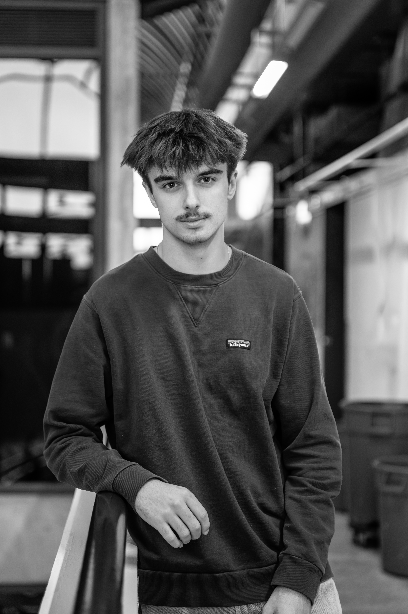

Keegan O'Neill, DesignerDESIGNING WITH PURPOSE.
I'm Keegan O'Neill, an industrial designer who likes making things that feel intuitive, intentional and satisfying to use. Most of my work sits somewhere between product design, branding, and digital experiences, but at the center of all of it is the same goal: creating things people connect with and enjoy using.
BUILT
ON
REAL
THINGS.
I'm studying industrial design at Iowa State, but most of what I've actually learned came from working with my hands: building, testing, breaking, and rebuilding. I've worked across packaging, powersports, apparel, product design, and digital interfaces. The context changes but the approach doesn't: understand what someone actually needs, then shape the experience around both how it feels to use and how it's visually communicated.
What keeps me interested in design is how every project opens the door into a completely different world. One month I'm learning about mobility systems, the next it's packaging psychology, UI flows, or content production. I like getting deep into unfamiliar spaces and figuring out what makes an experience feel natural, useful, and visually engaging to the people interacting with it.
What I Do
01
Product Design
02
UX & UI
03
Branding
04
Creative Direction
05
Rendering
06
Photography
07
Research
08
Visual Storytelling
09
Prototype Development
INTERESTED IN PROJECTS
THAT FEEL WORTH MAKING.
Always open to work where good design actually changes the experience, for the person using it and not just the person presenting it.
Get in touch →